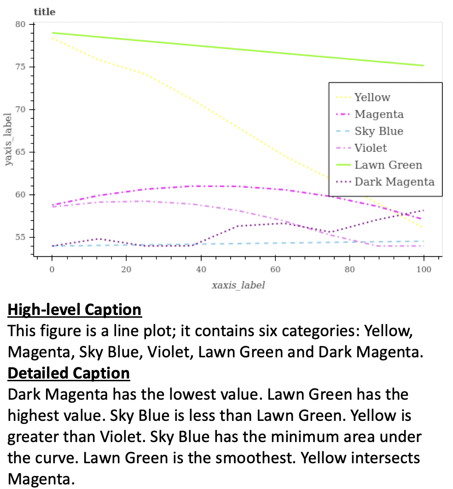
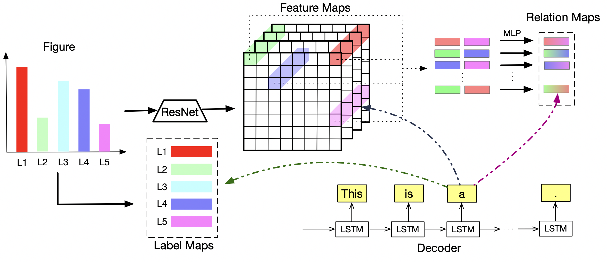

Figure Captioning with Reasoning and Sequence-Level Training
Abstract
Figures, such as bar charts, pie charts, and line plots, are widely used to convey important information in a concise format. They are usually human-friendly but difficult for computers to process automatically. In this work, we investigate the problem of figure captioning where the goal is to automatically generate a natural language description of the figure. While natural image captioning has been studied extensively, figure captioning has received relatively little attention and remains a challenging problem. First, we introduce a new dataset for figure captioning, FigCAP, based on FigureQA. Second, we propose two novel attention mechanisms. To achieve accurate generation of labels in figures, we propose Label Maps Attention. To model the relations between figure labels, we propose Relation Maps Attention. Third, we use sequence-level training with reinforcement learning in order to directly optimizes evaluation metrics, which alleviates the exposure bias issue and further improves the models in generating long captions. Extensive experiments show that the proposed method outperforms the baselines, thus demonstrating a significant potential for the automatic captioning of vast repositories of figures.
1 Introduction
Understanding images has been an important area of investigation within computer vision and natural language processing. Recent work has shown excellent performance on a number of tasks, especially image captioning and Visual Question Answering (VQA). Figures, as a specific type of images, convey useful information, such as trends, proportions and values, in a concise format. People can understand these attributes at a glance. Therefore, people usually use figures (e.g., bar chart, pie chart, and line plot) in documents, reports and talks to efficiently communicate ideas. Figure captioning aims at generating a natural language description of a figure, by inferring potential logical relations between elements in the figure. This topic is interesting from the artificial intelligence perspective: the machines would extract the relations between the labels in the figures based on visual intuitions, instead of reconstructing the source data, i.e., inverting the visualization pipeline.
While natural image captioning has been extensively studied in computer vision, figure captioning has received little attention. Depending on the user case, the generated caption may be a high-level description of the figure, or it may include more details such as relations among the data presented in the figure. There are two major challenges in this task. First, it requires an understanding of the labels and relations among labels in a figure. Second, the figure captions typically contains a few sentences, which are usually longer than the captions for natural images (e.g. MSCOCO dataset Lin et al. (2014)). As a long-text-generation task, figure captioning will accumulate more errors as more words predicted.
A similar problem of understanding figures is VQA. However, figure captioning distinguishes itself from VQA in two important aspects. First, the input is different. The input to a VQA system consists of an image/figure to be queried and a question. A figure captioning system automatically generates a description of the figure, which can be regarded as a self-asking VQA task. Second, the output of a VQA system is the answer to the given question, commonly containing only a few words. In contrast, a figure captioning system usually produces a few sentences.
In this paper, we investigate the problem of figure captioning. Our main contributions in this work are:
-
•
We introduce a new dataset for figure captioning called FigCAP.
-
•
We propose two novel attention mechanisms to improve the decoder’s performance. The Label Maps Attention enables the decoder to focus on specific labels. The Relation Maps Attention is proposed to discover the relations between figure labels.
-
•
We utilize sequence-level training with reinforcement learning to handle long sequence generation and alleviate the issue of exposure bias.
-
•
Empirical experiments show that the proposed models can effectively generate captions for figures under several metrics.
2 Related Work
Image Captioning
The existing approaches for image captioning largely fall into two categories: top-down and bottom-up. The bottom-up approaches first output key words describing different aspects of an image such as visual concepts, objects, attributes, and then combines them to sentences. Farhadi et al. (2010); Kulkarni et al. (2011); Elliott and Keller (2013); Lebret et al. (2014); Fang et al. (2015) lie in this category. The successful application of deep learning in natural language processing, for example, machine translation, motivates the exploration on top-down methods, such as Mao et al. (2014); Donahue et al. (2015); Jia et al. (2015); Vinyals et al. (2015); Xu et al. (2015). These approaches formulate the image captioning as a machine translation problem, directly translating an image to sentences by utilizing the encoder-decoder framework. The approaches based on deep neural networks proposed recently largely fall into this category.
Visual Question Answering
Another task related to the figure captioning problem is VQA Kafle and Kanan (2017), which is to answer queries in natural language about an image. The traditional approaches Antol et al. (2015); Gao et al. (2015); Kafle and Kanan (2016); Zhou et al. (2015); Saito et al. (2017) train a linear classifier or neural network with the combined features from images and questions. Bilinear pooling or related techniques are further proposed to efficiently and expressively combine the image and question features Fukui et al. (2016); Kim et al. (2016). Spatial attention was used to adaptively modify the visual features or local features in VQA Xu and Saenko (2016); Yang et al. (2016); Ilievski et al. (2016). Bayesian models were used to discover the relationships between the features of the images, questions and answers Malinowski and Fritz (2014); Kafle and Kanan (2016). Previous works Andreas et al. (2016b, a) also decompose VQA into several sub-problems and solve these sub-problems individually.
Figure VQA
VQA has been used to answer queries in natural language about figures. Kahou et al. Kahou et al. (2017) introduced FigureQA, a novel visual reasoning corpus for VQA task on figures. On this dataset, relation network Santoro et al. (2017) has strong performance among several models. Kafle et al. Kafle et al. (2018) presented DVQA, a dataset used to evaluate bar chart understanding by VQA. On this dataset, multi-output model and SAN with dynamic encoding model have been shown to achieve better performances.


3 Background
3.1 Sequence-Generation Model
A sequence-generation model generates a sequence conditioned on an object , where is a generated token at time and is the set of output tokens. The length of an output sequence is denoted as , and indicates a subsequence . The data are given with as pairs to train a sequence-generation model. We denote the output a sequence-generation model as .
Starting from the initial hidden state , a RNN produces a sequence of states , given a sequence-feature representation , where denotes a function mapping a token to its feature representation. Let . The states are generated by applying a transition function for times. The transition function is implemented by a cell of an RNN, with popular choices being the Long Short-Term Memory (LSTM Hochreiter and Schmidhuber (1997)) and Gated Recurrent Units (GRU Cho et al. (2014)). We use LSTM in this work. To generate a token , a stochastic output layer is applied on the current state :
where denotes one draw from a multinomial distribution, and represents a linear transformation. Since the generated sequence is conditioned on , one can simply start with an initial state encoded from : Bahdanau et al. (2017); Cho et al. (2014). Finally, a conditional RNN can be trained for sequence generation with gradient ascent by maximizing the log-likelihood of a generative model.
3.2 Sequence-Level Training
Sequence-generation models are typically trained with “Teacher-Forcing”, which maximizes the likelihood estimation (MLE) of the next ground-truth word given the previous ground-truth word. This approach accelerates the convergence of training, but introduces exposure bias Ranzato et al. (2016), caused by the mismatch between training and testing. The error will accumulate during testing, and this problem becomes more severe when the sequence become longer.
Sequence generation with reinforcement learning (RL) can alleviate exposure bias and improve the performance by directly optimizing the evaluation metrics via sequence-level training. Instead of training in word-level as MLE, sequence-level training is guided by the reward of the sequence. Variants of this method include adding actor-critic Bahdanau et al. (2017) or self-critical baselines Rennie et al. (2016); Anderson et al. (2017) to stabilize the training. Besides, Luo et al. (2018) used image retrieval model to discriminate the generated and reference captions combined with sequence-level training.
4 Problem Definition and Dataset
Figure Captioning
This task aims at producing descriptions with essential information for a given figure. The input is a figure and the expected output is the caption for this figure. The caption may contains high-level information only, such as figure type, number of labels, and label names. This is to give the users a rough idea of the content in the figure. Or the caption may contain more details, such as the relations among labels (e.g., A is larger than B, C has the maximum area under the curve). This is to give the users a deep understanding of the logic demonstrated in the figure. Depending on the use cases, the tasks of figure captioning can be categorized into (i) generating high-level captions for figures and (ii) generating detailed captions for figures.
FigCAP
There are some public datasets from previous work on figure understanding, such as FigureSeer Siegel et al. (2016), DVQAKafle et al. (2018) and FigureQA Kahou et al. (2017). FigureSeer contains figures from research papers, while plots in both DVQA and FigureQA are synthetic. Due to the synthetic nature, one can generate as many figures, accompanied by questions and answers as he wants. In this sense, the size of FigureSeer is relatively small compared to DVQA and FigureQA, though its figures come from real data. In terms of figure type, FigureQA contains vertical and horizontal bar charts, pie charts, line plots, and dot-line plots while DVQA has only bar charts. Also, reasoning ability is important for captioning approaches to generate good quality captions. Note that FigureQA is designed for visual reasoning task. Considering the above factors, we generate our dataset FigCAP based on FigureQA.
FigCAP consist of figure-caption pairs where figures can be generated by the method introduced in Kahou et al. (2017) and captions are based on corresponding fundamental data, i.e., they are ground truth captions (reference captions). Note that a human would obviously not describe a figure with exactly the same sentences. To increase diversity of reference captions, we design templates to paraphrase sentences. Table 1 lists selected templates we use to paraphrase sentences.
| This figure includes N labels: A, B, C..; A is the maximum… |
| There are N labels in this TYPE; their names are A, B, C.. |
| This is TYPE; it has N labels: A, B, C, D…; A is larger than B, B is the maximum… |
| This figure is TPYE; it contains N categories; their names are A, B, C, D…; A is larger than B |
| There are N different labels in this line plot, with labels A, B…; D has the largest area under the curve… |
| This figure is TYPE; there are N categories in it; their names are A, B, C…; C is the minimum… |
| There are N different bars in this TYPE: A, B, C, D…; C is the minimum… |
| It is a dot line plot, with N lines: A, B, C, D…; C is the minimum… |
| This figure is a dot line plot; there are N lines; their names are A, B, C…; C is the minimum… |
| There are N categories in this dot line plot: A, B, C… |
With these templates, we develop two datasets, FigCAP-H and FigCAP-D for two different use cases. FigCAP-H contains High-level descriptions for figure captions. In contrast, FigCAP-D contains Detailed descriptions for figure captions. Both FigCAP-H and FigCAP-D have five different types of figures: horizontal bar chart, vertical bar chart, pie chart, line plot and dotted line plot. The numbers of each type of figures are roughly the same for each of them. Table 2 shows the numbers of figure-caption pairs for both datasets. Their sizes are similar to the setting in (Gan et al., 2017). Note that since both figures and captions are synthetic, the figure-caption pairs can be generated as many as needed.
| Datasets | Training | Validation | Testing |
|---|---|---|---|
| FigCAP-H | 99,360 | 5,000 | 5,152 |
| FigCAP-D | 99,360 | 5,000 | 5,152 |
An example of captions for Figure 1 is the following.
“This is a line plot. It contains 6 categories. Dark Magenta has the lowest value. Lawn Green has the highest value. [Sky Blue is less than Lawn Green. Yellow is greater than Violet. Sky Blue has the minimum area under the curve. Lawn Green is the smoothest. Yellow intersects Magenta.]“
The words underlined are high level captions of the figure. The words in square brackets are detailed captions of the figure, which describes the relationships among the labels of categories represented by plotted lines.
Figure captioning using the FigCAP data is more challenging than natural image captioning for two main reasons. First, the sentences in figure captioning are much longer, compared with natural image captioning. Second, the logical information is much more important and complex, yet is very difficult and challenging to extract from figures. Another important and challenging problem is how to capture the key information and insights from the figure automatically, e.g., humans can derive key insights from the figure by making inferences based on the logical and semantic information in the figure.
5 The Proposed Models
We describe the proposed model for figure captioning, as illustrated in Figure 2 . The model generally follows an encoder-decoder structure. The encoder is a Residual Network He et al. (2016) which extracts feature maps from the given figures. Reasoning network, built upon the feature maps, produces relation maps which embed logical information in the given figure. We use LSTM Hochreiter and Schmidhuber (1997) for decoding. With our proposed attention models, the decoder may optionally attend to the label maps, feature maps and/or relation maps. The objective of figure captioning is to maximize likelihood or total rewards. The details of each component will be presented in the following subsections.
5.1 Captioning Model
Similar to the approaches in Rennie et al. (2016); Karpathy and Fei-Fei (2015), we use the following neural networks for figure captioning. The figure is used as the input of a ResNet.
The output of the ResNet (Feature Maps) is used to initialize a LSTM:
is the sigmoid function. The caption is preprocessed with a BOS token in the beginning and a EOS token in the end. We use the one-hot vector to represent the word , and the encoding is further embedded by a linear embedding .
The word vector and context vector (See Section: Attention Models for Figure Captioning) are used as the input of the LSTM. The signals for input gate, forget gate and output gate are
respectively. is the context vector, is the sigmoid function, and is the output of hidden layer in the LSTM. With the signals for input gate, forget gate and output gate, is computed as:
where is the context vector, is the hyperbolic tangent function, and is the maxout non-linearity.
We use both the context vector and to predict the next word :
We illustrate details for computing context vector with multiple attention mechanism in next section.
5.2 Attention Models for Figure Captioning
Attention mechanism has been widely used in the encoder-decoder structure to improve the decoding performance. We propose two attention models: Relation Maps Attention (Att_R), and Label Maps Attention (Att_L). We also introduce Feature Maps Attention (Att_F). Context vector can be computed from one of them, or combination of them.
5.2.1 Feature Maps Attention Att_F
Feature Maps Attention Model takes Feature Maps ( contains feature vectors; ) and the hidden state of LSTM as input. For each feature in , it computes a score between and . With these scores as weights, it computes the context vector as the weighted sum of all features in the feature maps. Equation 1 defines Feature Maps Attention Model:
| (1) | ||||
where is the -th feature in the feature maps , is the context vector and is an attention weight.
5.2.2 Relation Maps Attention Att_R
In order to generate correct captions describing relations among the labels (e.g. A is the maximum, B is greater than C, C is less than D.), it is essential to perform reasoning among labels in a given figure. Inspired by Relation Networks Santoro et al. (2017), we propose the Relation Maps Attention Model (Att_R). We consider each feature vector in the feature maps as an object. For any two “objects”, for example, and , we concatenate them and feed the vector into a MLP, resulting in a relation vector :
| (2) |
Therefore, the relation maps contains relation vectors ( is the number of feature vectors in feature maps ). Given the relation maps , at decoding step , Att_R computes the relation context vector as follows:
| (3) | ||||
where is the -th relation vector in relation maps and is an attention weight.
Note that more complex relationships can be induced from pairwise relations, e.g. A > B and B > C lead to A > C. The relation map obtained from Reasoning Net represents abstract objects that implicitly represent object(s) in the figure, not explicitly represent one specific object like a bar or a line.
5.2.3 Label Maps Attention Att_L
We propose Label Map Attention Model (Att_L) where the LSTM attends to Label Map for decoding. Label Map is composed of embeddings of those labels appearing in the figure. If is the number of labels in the figure, then contains vectors. Let be the -th vector in the label maps , we define Att_L as follows:
| (4) | ||||
where is the context vector at time step .
Note that figure labels are also used as inputs. For example, in Figure 1, is 6; Yellow, Magenta, Sky Blue, Violet, Lawn Green and Dark Magenta are extracted from it using state-of-the-art computer vision techniques such as Optical Character Recognition (OCR). Since labels appear in the caption of the input figure, instead to define a new set of vectors to represent the labels in the Label Maps , we use a subset of the word embeddings . In Figure 1, embeddings for Yellow, Magenta, Sky Blue, Violet, Lawn Green and Dark Magenta compose its Label Map .
5.2.4 Context Vector
In the captioning model, the decoder can use any combination of Att_F, Att_R and Att_L, or it can use only one of them. For example, if we incorporate all three Attention Models (Eq.1,3,4) in the caption generation model, the final context vector , used as input to the decoder, is as follows:
| (5) |
We explore different combinations of Attention Models for generating captions. More details are in Experimental Evaluations (Section 6).
5.3 Hybrid Training Objective
In the traditional method Williams and Zipser (1989), “Teacher forcing” is widely used for the supervised training of decoders. Given an object X, it maximizes the likelihood of the target word , given the previous target sequences :
| (6) |
Due to the exposure bias and indirectly optimizing the evaluation metric, supervised training usually can not provide best results. Besides, the word-level training is difficult to handle the generation with different but reasonable word-orders. As a long-text-generation task, figure captioning will accumulate more errors as more words predicted and diversity will be undermined.
Sequence-level training with RL can effectively alleviate the mentioned problems, by directly optimizing the sequence-level evaluation metric. We use the self-critical policy gradient training algorithm in our model. Specifically, a sequence is generated by greedy word search, i.e., selecting the word with the highest probability. Then, another sequence is generated by sampling next word according to the probability distribution of . The sampled sequence is an exploration of the policy for generating the caption, and the sequence obtained from greedy search is the baseline. We use CIDEr as the sequence-level evaluation metric and compute CIDEr for and , respectively. The reward is defined as the difference of CIDEr between the sampled sequence and greedy sequence . Let be the CIDEr of sequence . We minimize the sequence-level loss (i.e. maximizing the rewards):
| (7) |
Our model is pretrained with MLE loss to provide more efficient policy exploration. Good explorations are encouraged while poor explorations are discouraged in future generation. However, we found that purely optimizing sequence-level evaluation metric, such as CIDEr, may lead to overfitting. To tackle this issue, we use hybrid training objective in our model, considering both word-level loss provided by MLE (Eq.6) and sequence-level loss computed by RL (Eq.7):
| (8) |
where is a scaling factor balancing the weights between and . In practice, starts from 1 and slowly decays to 0, then only reinforcement learning loss is used to improve our generator.
6 Experimental Evaluations
In this section, we validate our proposed models on the FigCAP-H and FigCAP-D. Specifically, we evaluate the models in two use cases: generating high-level captions and generating detailed captions for figures, respectively. We perform an ablation study on the improvements brought by each part of our proposed method.
| Evaluation Metrics | |||||||
|---|---|---|---|---|---|---|---|
| Models | CIDEr | BLEU1 | BLEU2 | BLEU3 | BLEU4 | METEOR | ROUGE |
| CNN-LSTM | 0.232 | 0.332 | 0.255 | 0.201 | 0.157 | 0.188 | 0.270 |
| CNN-LSTM+Att_F | 0.559 | 0.333 | 0.262 | 0.210 | 0.168 | 0.209 | 0.334 |
| CNN-LSTM+Att_F+Att_L | 1.018 | 0.337 | 0.269 | 0.215 | 0.170 | 0.227 | 0.368 |
| Evaluation Metrics | |||||||
|---|---|---|---|---|---|---|---|
| Models | CIDEr | BLEU1 | BLEU2 | BLEU3 | BLEU4 | METEOR | ROUGE |
| CNN-LSTM | 0.158 | 0.055 | 0.050 | 0.044 | 0.038 | 0.115 | 0.244 |
| CNN-LSTM+Att_F | 0.868 | 0.215 | 0.200 | 0.181 | 0.159 | 0.200 | 0.401 |
| CNN-LSTM+Att_F+Att_L | 0.917 | 0.232 | 0.214 | 0.194 | 0.170 | 0.207 | 0.413 |
| CNN-LSTM+Att_All | 1.036 | 0.312 | 0.290 | 0.264 | 0.233 | 0.231 | 0.468 |
| CNN-LSTM+Att_All+RL | 1.179 | 0.404 | 0.367 | 0.324 | 0.270 | 0.263 | 0.489 |
6.1 Experimental Settings
We implement the following models with TensorFlow, and conduct experiments on a single nVidia Tesla V100 GPU. For any of them, ResNet-50 pretrained on ImageNet Deng et al. (2009) is used as the encoder and a 256-unit LSTM is the decoder.
-
•
CNN-LSTM: This baseline model uses basic CNN-LSTM structure, without any Attention Model.
-
•
CNN-LSTM+Att_F: This model uses Att_F for decoding. Similar model is used in natural image captioning Xu et al. (2015).
-
•
CNN-LSTM+Att_F+Att_L: This model uses both Att_F and Att_L for decoding.
-
•
CNN-LSTM+Att_F+Att_L+Att_R: This model uses Att_F, Att_L and Att_R for decoding.
-
•
CNN-LSTM+Att_F+Att_L+Att_R+RL: The loss function of this model is described in Section 5.3. Training with RL can improve the model’s performance when handling long captions, which is suitable for FigCAP-D.
All of them are optimized with Adam Kingma and Ba (2014) on the training set and evaluated on the testing set. We tune hyperparameters on the validation set. Table 2 shows the statistics of our datasets FigCAP-H and FigCAP-D. Appendix A contains more details on experimental settings. Following Xu et al. (2015) and Rennie et al. (2016), we use CIDEr Vedantam et al. (2015), BLEU1-4 Papineni et al. (2002), METEOR Banerjee and Lavie (2005) and ROUGEL Lin (2004) as evaluation metrics. Note that we only evaluate models containing Att_R on FigCAP-D since only long captions contain relation information.
6.2 Results of Generating High-Level Captions
We evaluate the proposed models for the task of generating high-level captions. Compared to generating the detailed captions, generating high-level descriptions is relatively easier. We do not need to model the relations between the labels in the figures. Besides, the high-level captions are usually much shorter than the detailed captions. Thus, in this task, we do not evaluate Relation Maps Attention and sequence-level training with RL.
Table 3 shows the performances of different models for generating high-level captions. It is observed that Label Maps Attention can effectively improve the model performances under different metrics. This observation indicates that, different from natural image captioning, features specific to figures, such as labels, can be utilized to boost the model’s performance.
6.3 Results of Generating Detailed Captions
We further evaluate the proposed models for the task of generating detailed captions. For generating detailed captions, it is important to discover the relations between the labels in the figures, and generate the long sequences of captions. Thus, we further validate the improvements by introducing Relation Maps Attention and sequence-level training by RL.
Table 4 shows the performances of different models in generating detailed captions. There are several observations. First, in this task we observe similar improvements using Label Maps Attention, compared to the results of high-level caption generation in Table 3. Second, in most cases the performance of CNN-LSTM+Att_F+Att_L is better in generating high-level captions, than its performance in generating detailed captions. This indicates that compared to generating high-level captions, generating detailed captions is usually more challenging: in the latter task, we need to model the relations between the labels of figures and handle the long sequence generation. Third, we achieve significant improvements when introducing Relation Maps Attention and RL. This validates that Relation Maps Attention and RL can effectively model the relations between the labels of figures and the long sequence generation, in the task of generating detailed captions.
6.4 Discussions
Experimental results show that the proposed Attention Models for figure captioning are capable of improving the quality of generated captions. Compared with the baseline model CNN-LSTM, we observe that models that use Attention Models achieve better performance on both FigCAP-H and FigCAP-D. This result indicates that attention-based models are useful for figure captioning. Second, we found that the effects of Att_F is more higher in FigCAP-D than FigCAP-H. It indicates that generating high-level descriptions does not actually need complex Attention Models since it is more likely a classification task which can be accomplished based on general information of the figure. In addition, we find that Relation Maps are useful if descriptions about relations of a figure’s labels are desired (e.g., Bar A is higher than Bar B; Bar C has the largest value). Furthermore, with RL we can alleviate the exposure bias issue and directly optimize the evaluation metric used at the inference time. This enables us to achieve better performance in the generation of long captions.
7 Conclusion
In this work, we investigated the problem of figure captioning. First, we presented a new dataset, FigCAP, for this figure captioning task, based on FigureQA. Second, we propose two novel attention mechanisms. To achieve accurate generation of labels in figures, we propose Label Maps Attention. To discover the relations between figure labels, we propose Relation Maps Attention. Third, to handle long sequence generation and alleviate the issue of exposure bias, we utilize sequence-level training with reinforcement learning. Experimental results show that the proposed models can effectively generate captions for figures under several metrics.
References
- Anderson et al. (2017) Peter Anderson, Xiaodong He, Chris Buehler, Damien Teney, Mark Johnson, Stephen Gould, and Lei Zhang. 2017. Bottom-up and top-down attention for image captioning and vqa. In CVPR.
- Andreas et al. (2016a) Jacob Andreas, Marcus Rohrbach, Trevor Darrell, and Dan Klein. 2016a. Learning to compose neural networks for question answering. In NAACL-HLT, pages 1545–1554.
- Andreas et al. (2016b) Jacob Andreas, Marcus Rohrbach, Trevor Darrell, and Dan Klein. 2016b. Neural module networks. In CVPR.
- Antol et al. (2015) Stanislaw Antol, Aishwarya Agrawal, Jiasen Lu, Margaret Mitchell, Dhruv Batra, C Lawrence Zitnick, and Devi Parikh. 2015. Vqa: Visual question answering. In ICCV, pages 2425–2433.
- Bahdanau et al. (2017) Dzmitry Bahdanau, Philemon Brakel, Kelvin Xu, Anirudh Goyal, Ryan Lowe, Joelle Pineau, Aaron Courville, and Yoshua Bengio. 2017. An actor-critic algorithm for sequence prediction. In ICLR.
- Banerjee and Lavie (2005) Satanjeev Banerjee and Alon Lavie. 2005. Meteor: An automatic metric for mt evaluation with improved correlation with human judgments. In Proceedings of the acl workshop on intrinsic and extrinsic evaluation measures for machine translation and/or summarization, pages 65–72.
- Cho et al. (2014) Kyunghyun Cho, Bart Van Merriënboer, Caglar Gulcehre, Dzmitry Bahdanau, Fethi Bougares, Holger Schwenk, and Yoshua Bengio. 2014. Learning phrase representations using rnn encoder-decoder for statistical machine translation. arXiv preprint arXiv:1406.1078.
- Deng et al. (2009) Jia Deng, Wei Dong, Richard Socher, Li-Jia Li, Kai Li, and Li Fei-Fei. 2009. Imagenet: A large-scale hierarchical image database. In CVPR, pages 248–255. Ieee.
- Donahue et al. (2015) Jeffrey Donahue, Lisa Anne Hendricks, Sergio Guadarrama, Marcus Rohrbach, Subhashini Venugopalan, Kate Saenko, and Trevor Darrell. 2015. Long-term recurrent convolutional networks for visual recognition and description. In CVPR, pages 2625–2634.
- Elliott and Keller (2013) Desmond Elliott and Frank Keller. 2013. Image description using visual dependency representations. In EMNLP, pages 1292–1302.
- Fang et al. (2015) Hao Fang, Saurabh Gupta, Forrest Iandola, Rupesh K Srivastava, Li Deng, Piotr Dollár, Jianfeng Gao, Xiaodong He, Margaret Mitchell, John C Platt, et al. 2015. From captions to visual concepts and back. In CVPR, pages 1473–1482.
- Farhadi et al. (2010) Ali Farhadi, Mohsen Hejrati, Mohammad Amin Sadeghi, Peter Young, Cyrus Rashtchian, Julia Hockenmaier, and David Forsyth. 2010. Every picture tells a story: Generating sentences from images. In ECCV, pages 15–29. Springer.
- Fukui et al. (2016) Akira Fukui, Dong Huk Park, Daylen Yang, Anna Rohrbach, Trevor Darrell, and Marcus Rohrbach. 2016. Multimodal compact bilinear pooling for visual question answering and visual grounding. arXiv preprint arXiv:1606.01847.
- Gao et al. (2015) Haoyuan Gao, Junhua Mao, Jie Zhou, Zhiheng Huang, Lei Wang, and Wei Xu. 2015. Are you talking to a machine? dataset and methods for multilingual image question. In NIPS, pages 2296–2304.
- He et al. (2016) Kaiming He, Xiangyu Zhang, Shaoqing Ren, and Jian Sun. 2016. Deep residual learning for image recognition. In CVPR, pages 770–778.
- Hochreiter and Schmidhuber (1997) Sepp Hochreiter and Jürgen Schmidhuber. 1997. Long short-term memory. Neural computation, 9(8):1735–1780.
- Ilievski et al. (2016) Ilija Ilievski, Shuicheng Yan, and Jiashi Feng. 2016. A focused dynamic attention model for visual question answering. arXiv preprint arXiv:1604.01485.
- Jia et al. (2015) Xu Jia, Efstratios Gavves, Basura Fernando, and Tinne Tuytelaars. 2015. Guiding long-short term memory for image caption generation. arXiv preprint arXiv:1509.04942.
- Kafle and Kanan (2016) Kushal Kafle and Christopher Kanan. 2016. Answer-type prediction for visual question answering. In CVPR, pages 4976–4984.
- Kafle and Kanan (2017) Kushal Kafle and Christopher Kanan. 2017. Visual question answering: Datasets, algorithms, and future challenges. Computer Vision and Image Understanding, 163:3–20.
- Kafle et al. (2018) Kushal Kafle, Brian Price, Scott Cohen, and Christopher Kanan. 2018. Dvqa: Understanding data visualizations via question answering. In CVPR, pages 5648–5656.
- Kahou et al. (2017) Samira Ebrahimi Kahou, Adam Atkinson, Vincent Michalski, Ákos Kádár, Adam Trischler, and Yoshua Bengio. 2017. Figureqa: An annotated figure dataset for visual reasoning. arXiv preprint arXiv:1710.07300.
- Karpathy and Fei-Fei (2015) Andrej Karpathy and Li Fei-Fei. 2015. Deep visual-semantic alignments for generating image descriptions. In CVPR, pages 3128–3137.
- Kim et al. (2016) Jin-Hwa Kim, Sang-Woo Lee, Donghyun Kwak, Min-Oh Heo, Jeonghee Kim, Jung-Woo Ha, and Byoung-Tak Zhang. 2016. Multimodal residual learning for visual qa. In NIPS, pages 361–369.
- Kingma and Ba (2014) Diederik P Kingma and Jimmy Ba. 2014. Adam: A method for stochastic optimization. arXiv preprint arXiv:1412.6980.
- Kulkarni et al. (2011) Girish Kulkarni, Visruth Premraj, Sagnik Dhar, Siming Li, Yejin Choi, Alexander C Berg, and Tamara L Berg. 2011. Baby talk: Understanding and generating image descriptions. In CVPR. Citeseer.
- Lebret et al. (2014) Rémi Lebret, Pedro O Pinheiro, and Ronan Collobert. 2014. Simple image description generator via a linear phrase-based approach. arXiv preprint arXiv:1412.8419.
- Lin (2004) Chin-Yew Lin. 2004. Rouge: A package for automatic evaluation of summaries. Text Summarization Branches Out.
- Lin et al. (2014) Tsung-Yi Lin, Michael Maire, Serge Belongie, James Hays, Pietro Perona, Deva Ramanan, Piotr Dollár, and C Lawrence Zitnick. 2014. Microsoft coco: Common objects in context. In ECCV, pages 740–755. Springer.
- Luo et al. (2018) Ruotian Luo, Brian Price, Scott Cohen, and Gregory Shakhnarovich. 2018. Discriminability objective for training descriptive captions. In CVPR.
- Malinowski and Fritz (2014) Mateusz Malinowski and Mario Fritz. 2014. A multi-world approach to question answering about real-world scenes based on uncertain input. In NIPS, pages 1682–1690.
- Mao et al. (2014) Junhua Mao, Wei Xu, Yi Yang, Jiang Wang, Zhiheng Huang, and Alan Yuille. 2014. Deep captioning with multimodal recurrent neural networks (m-rnn). arXiv preprint arXiv:1412.6632.
- Papineni et al. (2002) Kishore Papineni, Salim Roukos, Todd Ward, and Wei-Jing Zhu. 2002. Bleu: a method for automatic evaluation of machine translation. In ACL, pages 311–318. Association for Computational Linguistics.
- Ranzato et al. (2016) Marc’Aurelio Ranzato, Sumit Chopra, Michael Auli, and Wojciech Zaremba. 2016. Sequence level training with recurrent neural networks. In ICLR.
- Rennie et al. (2016) Steven J Rennie, Etienne Marcheret, Youssef Mroueh, Jarret Ross, and Vaibhava Goel. 2016. Self-critical sequence training for image captioning. In CVPR.
- Saito et al. (2017) Kuniaki Saito, Andrew Shin, Yoshitaka Ushiku, and Tatsuya Harada. 2017. Dualnet: Domain-invariant network for visual question answering. In ICME, pages 829–834. IEEE.
- Santoro et al. (2017) Adam Santoro, David Raposo, David G Barrett, Mateusz Malinowski, Razvan Pascanu, Peter Battaglia, and Tim Lillicrap. 2017. A simple neural network module for relational reasoning. In NIPS, pages 4967–4976.
- Siegel et al. (2016) Noah Siegel, Zachary Horvitz, Roie Levin, Santosh Divvala, and Ali Farhadi. 2016. Figureseer: Parsing result-figures in research papers. In ECCV, pages 664–680. Springer.
- Vedantam et al. (2015) Ramakrishna Vedantam, C Lawrence Zitnick, and Devi Parikh. 2015. Cider: Consensus-based image description evaluation. In CVPR, pages 4566–4575.
- Vinyals et al. (2015) Oriol Vinyals, Alexander Toshev, Samy Bengio, and Dumitru Erhan. 2015. Show and tell: A neural image caption generator. In CVPR, pages 3156–3164. IEEE.
- Williams and Zipser (1989) Ronald J Williams and David Zipser. 1989. A learning algorithm for continually running fully recurrent neural networks. Neural computation, 1(2):270–280.
- Xu and Saenko (2016) Huijuan Xu and Kate Saenko. 2016. Ask, attend and answer: Exploring question-guided spatial attention for visual question answering. In ECCV, pages 451–466. Springer.
- Xu et al. (2015) Kelvin Xu, Jimmy Ba, Ryan Kiros, Kyunghyun Cho, Aaron Courville, Ruslan Salakhudinov, Rich Zemel, and Yoshua Bengio. 2015. Show, attend and tell: Neural image caption generation with visual attention. In ICML, pages 2048–2057.
- Yang et al. (2016) Zichao Yang, Xiaodong He, Jianfeng Gao, Li Deng, and Alex Smola. 2016. Stacked attention networks for image question answering. In CVPR, pages 21–29.
- Zhou et al. (2015) Bolei Zhou, Yuandong Tian, Sainbayar Sukhbaatar, Arthur Szlam, and Rob Fergus. 2015. Simple baseline for visual question answering. arXiv preprint arXiv:1512.02167.